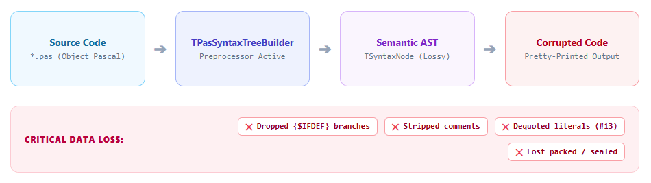
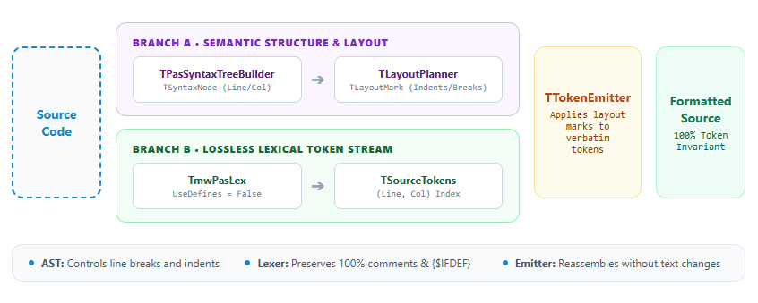
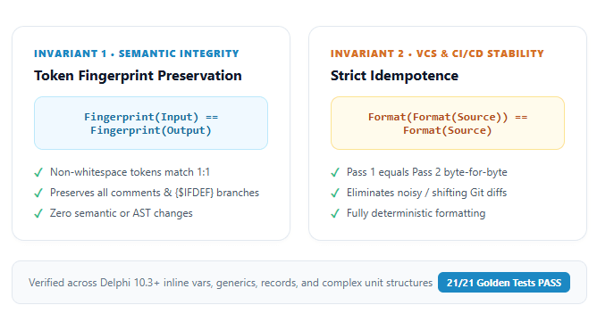

Dlaczego samo AST to za mało: Bezstratna transformacja kodu w Delphi
W projektach z wieloletnią historią niespójność formatowania bywa zmorą codziennej pracy. Część modułów używa wcięć na dwa znaki, część na cztery, instrukcje begin..end są porozrzucane w losowych stylach, a wielolinijkowe instrukcje warunkowe zaciemniają logikę biznesową. Naturalnym inżynierskim odruchem jest chęć automatyzacji: stworzenia narzędzia wiersza poleceń, które sformatuje kod przed zatwierdzeniem w repozytorium Git lub zintegruje się z potokiem CI/CD.
W świecie Delphi pierwszym intuicyjnym wyborem do takiego zadania jest popularna biblioteka DelphiAST. Pomysł wydaje się prosty:
- Wczytujemy plik źródłowy
.pas. - Parsujemy go do drzewa składniowego
TSyntaxNode. - Przechodzimy drzewo węzeł po węźle i generujemy kod na nowo ze spójnymi wcięciami (AST-to-Source).
Jednak próba wdrożenia tego pomysłu w produkcyjnym projekcie Delphi niemal natychmiast kończy się katastrofą.
Pułapka naiwnego parsera
Wyobraź sobie, że uruchamiasz taki nowo napisany formater na krytycznym module produkcyjnym. Kod po przeformatowaniu wygląda estetycznie: wcięcia są równe, słowa kluczowe ułożone zgodnie z regułami sztuki. Następnie uruchamiasz kompilację na serwerze i build niespodziewanie pada.
Gdy zaczynasz analizować różnice w pliku (diff), ogarnia Cię przerażenie:
- Z kodu wyparowały wszystkie dyrektywy
{$IFDEF}– kompilator wkleił na stałe tylko jedną gałąź, a kod dla innych platform zniknął. - Zniknęły wszystkie komentarze dokumentujące zawiłe algorytmy i decyzje biznesowe.
- Deklaracja
packed recordstała się zwykłymrecord, co bez ostrzeżenia zniszczyło kompatybilność binarną struktur w pamięci. - Literały znakowe
#13zostały zamienione na tekst'#13', zmieniając semantykę operacji na ciągach znaków.

Dlaczego tak się stało? Czy to błąd w implementacji parsera?
Nie. To fundamentalna cecha architektury kompilatorów. Aby to zrozumieć, warto posłużyć się analogią medyczną: metaforą zdjęcia rentgenowskiego.
**Metafora Rentgena: ** Drzewo AST jest jak zdjęcie rentgenowskie człowieka. Rentgen doskonale ujawnia szkielet, układ kości i proporcje anatomiczne. Jednak próba „odtworzenia człowieka” wyłącznie na podstawie kliszy rentgenowskiej da bezduszny szkielet pozbawiony skóry, mięśni, koloru oczu i indywidualnych rysów twarzy. W kodzie źródłowym tymi „tkankami miękkimi” są komentarze, dyrektywy preprocesora, białe znaki i precyzyjne literały.
Anatomia problemu: Dlaczego AST w Delphi jest stratne
W teorii kompilatorów istnieje kluczowe rozróżnienie na dwa rodzaje drzew składniowych:
- Concrete Syntax Tree (CST / Parse Tree): Drzewo pełne, które reprezentuje każdy pojedynczy znak, spację, nawias, komentarz i token źródłowy.
- Abstract Syntax Tree (AST): Drzewo semantyczne, które celowo odrzuca elementy nieistotne dla wykonania programu, skupiając się wyłącznie na strukturze logicznej.
Biblioteka DelphiAST jest klasycznym drzewem semantycznym (tzw. Lossy AST). Została zaprojektowana do analizy statycznej, nawigacji po kodzie i inspekcji typów, a nie do bezstratnej regeneracji tekstu.
Szczegółowa analiza kodu biblioteki (dostępna w dokumentacji projektu w 01-analiza-delphiast.md) ujawnia cztery twarde powody, dla których bezpośredni AST-Writer nie ma prawa zadziałać w Object Pascalu:
1. Ewaluacja preprocesora połyka kod
Domyślnie lexer parsera działa z flagą UseDefines = True. Oznacza to, że preprocesor aktywnie ewaluuje warunki takie jak {$IFDEF MSWINDOWS} czy {$IFDEF DEBUG}. Kod znajdujący się w gałęzi nieaktywnej jest traktowany przez lexer jako śmieć i w ogóle nie trafia do parsera. Po sparsowaniu gałąź nieaktywna przestaje istnieć w pamięci. Z samego drzewa AST nie da się jej odtworzyć.
2. Komentarze żyją poza strukturą drzewa
Węzły komentarzy (TCommentNode) nie są częścią hierarchii TSyntaxNode. Parser zbiera je do pomocniczej listy buildera, a komentarze znajdujące się w nieaktywnych blokach {$IFDEF} są bezpowrotnie pomijane. Drzewo AST nie wie, do której instrukcji należy dany komentarz.
3. Dequotowanie literałów
Zarówno ciąg znaków '#13', jak i surowy kod znaku #13 są reprezentowane w węźle ntLiteral identycznym atrybutem tekstowym Value = '#13'. Parser gubi informację o tym, czy w kodzie oryginalnym był to literał znakowy czy string.
4. Brakujące modyfikatory i konstrukcje języka
Węzły TSyntaxNode nie przechowują wielu słów kluczowych specyficznych dla Delphi: modyfikatorów packed, class sealed, class abstract, konstrukcji anonimowych reference to, modyfikatorów widoczności pól class var ani treści bloków asemblera asm..end.
Wniosek: Próba napisania formatera w oparciu o czyste AST to ślepa uliczka.
Wzorzec Architektury Hybrydowej (Wariant C)
Skoro samo AST gubi kod, a sam lexer nie rozumie hierarchii i wcięć bloków begin..end, rozwiązaniem jest rozdzielenie odpowiedzialności pomiędzy dwa źródła prawdy. W projekcie [Rzemieślnik Kodu (rzemieslnik-kodu)](https://github.com/bogdanpolak/rzemieslnik-kodu) nazwaliśmy to podejściem Wariantem C – Architekturą Hybrydową.
Zasada podziału ról jest bezwzględna:
* Drzewo AST (TPasSyntaxTreeBuilder) odpowiada wyłącznie za układ i geometrię: wie, gdzie złamać wiersz, jak głęboko wciąć blok try..finally i jak sformatować gałęzie if..else. Nie ma prawa decydować o treści tekstu.
* Lexer (TmwPasLex z UseDefines = False) odpowiada wyłącznie za treść: dostarcza pełny, bezstratny strumień tokenów, zawierający 100% słów kluczowych, komentarzy, białych znaków i dyrektyw kompilatora.

Potok hybrydowy składa się z czterech precyzyjnie współdziałających komponentów:
TPasSyntaxTreeBuilder(Tor A): Buduje semantyczne drzewo AST, odnotowując pozycje wiersza i kolumny (Line,Col,EndLine,EndCol) dla każdej konstrukcji składniowej.TSourceTokens(Tor B): Wykonuje drugi przebieg lexeraTmwPasLexz wyłączoną ewaluacją preprocesora (UseDefines := False). Indeksuje tokeny mapą(Line, Col) -> TokenIndex.TLayoutPlanner(Planer układu): Przemierza węzły AST i nanosi na tokeny znaczniki układu (TLayoutMark):BreakBefore(złamanie linii),Indent(poziom wcięcia) orazBlankBefore(wymuszona pusta linia).TTokenEmitter(Emiter): Iteruje po tokenach w kolejności źródłowej, aplikując wyliczone wcięcia, usuwając stare białe znaki i normalizując odstępy wokół operatorów, ale nie zmieniając ani jednego tokenu użytkownika.
Implementacja potoku krok po kroku
Zobaczmy, jak elegancko wygląda główny kod orkiestrujący ten proces w silniku formatera (plik docs/Example.FormatterArchitecture.pas w repozytorium projektu):
unit Example.FormatterArchitecture;
interface
function Run(const ASourceCode: string): string;
implementation
uses
DelphiAST.Classes,
DelphiAST.Lexer,
DelphiAST.Formatter.Engine;
function Run(const ASourceCode: string): string;
var
Root: TSyntaxNode;
Tokens: TSourceTokens;
Planner: TLayoutPlanner;
Marks: TTokenMarks;
Emitter: TTokenEmitter;
begin
// Krok 1: Zbuduj drzewo semantyczne do wyznaczenia układu
Root := ParseSource(ASourceCode);
try
// Krok 2: Pobierz kompletny, bezstratny strumień tokenów
Tokens := TSourceTokens.Create(ASourceCode);
try
// Krok 3: Zaplanuj wcięcia i łamania wierszy na podstawie AST
Planner := TLayoutPlanner.Create(Tokens);
try
Marks := Planner.Plan(Root);
finally
Planner.Free;
end;
// Krok 4: Wyemituj sformatowany kod, zachowując każdy token
Emitter := TTokenEmitter.Create(Tokens, Marks);
try
Result := Emitter.Emit;
finally
Emitter.Free;
end;
finally
Tokens.Free;
end;
finally
Root.Free;
end;
end;
end.Zwróć uwagę na rygorystyczne zarządzanie cyklem życia pamięci. W Object Pascalu węzły TSyntaxNode tworzą hierarchię własności – zwolnienie korzenia Root.Free automatycznie i bezpiecznie niszczy całe poddrzewo.
Prawdziwy test ognia: Dyrektywy preprocesora
Jak architektura hybrydowa radzi sobie z kodem naszpikowanym dyrektywami kompilatora? Spójrzmy na przykład z pliku docs/demo2_compiler_dir.pas:
unit demo2_compiler_dir;
{$IFDEF FPC}{$MODE DELPHI}{$ENDIF}
{$DEFINE SOMETHING}
interface
implementation
procedure Test;
begin
{$IFDEF SOMETHING}
Writeln('x1'); Writeln('x2');
{$ELSE}
Writeln('y1'); Writeln('y2');
{$ENDIF}
end;
end.W czystym AST gałąź {$ELSE} zostałaby bezpowrotnie skasowana. W architekturze hybrydowej dzieje się coś zupełnie innego:
TSourceTokenspobiera wszystkie tokeny obu gałęzi.- Gałąź aktywna (
{$IFDEF SOMETHING}) posiada odpowiadające jej węzły AST, więcTLayoutPlannerprzydziela jej pełne formatowanie strukturalne (instrukcje w osobnych liniach z wcięciem). - Gałąź nieaktywna (
{$ELSE}) nie posiada węzłów AST, więc formater przełącza się w bezpieczny tryb zachowawczy (fallback): przepisuje tokeny na poziomie wcięcia dyrektywy otwierającej. - Żaden znak kodu nie zostaje utracony.
Inżynieria Zaufania: Dwa Niezmienniki Bezpieczeństwa
Dlaczego programiści tak bardzo boją się automatycznych narzędzi formatujących w projektach o dużym długu technicznym? Ponieważ boją się cichej regresji. Jedno przestawienie średnika, zniknięcie nawiasu czy usunięcie flagi preprocesora może unieruchomić produkcję. Tradycyjne testy jednostkowe z kilkoma asercjami Assert.AreEqual nie dają pewności, że silnik zachowa się poprawnie w tysiącach nietypowych kombinacji składniowych.
W projekcie Rzemieślnik Kodu zastosowaliśmy podejście oparte na niezmiennikach matematycznych (Invariant-Driven Design). Zdefiniowaliśmy dwie żelazne reguły, które formater musi spełniać zawsze i bez wyjątków.

Niezmiennik 1: Token Fingerprint Preservation (Nienaruszalność kodu)
Definiujemy funkcję skrótu leksykalnego TokenFingerprint(S) jako konkatenację wszystkich tokenów semantycznych (słów kluczowych, identyfikatorów, operatorów, komentarzy i dyrektyw) z całkowitym pominięciem białych znaków (spacji, tabulatorów i znaków nowej linii).
Niezmiennik głosi:
$$\text{TokenFingerprint}(\text{Input}) = \text{TokenFingerprint}(\text{Formatted})$$
Jeżeli przed formatowaniem kod zawierał sto tokenów, to po formatowaniu musi zawierać dokładnie te same sto tokenów w identycznej kolejności. Formater ma prawo zmieniać wyłącznie białe znaki. Zgodność tego niezmiennika jest automatycznie weryfikowana dla każdego pliku.
Niezmiennik 2: Ścisła Idempotentność (Idempotence)
Co dzieje się, gdy uruchomisz formater na pliku, który już został sformatowany? Jeśli narzędzie jest źle zaprojektowane, przy każdym uruchomieniu przesunie wcięcie o dwie spacje dalej albo zmieni układ komentarza. W systemie kontroli wersji Git wywoła to koszmar – commity pełne nieistotnych, „pływających” różnic (noisy diffs).
Formater rzemieślniczy musi być ściśle idempotentny:
$$\text{Format}(\text{Format}(S)) = \text{Format}(S)$$
Wynik drugiego przebiegu musi być identyczny z wynikiem pierwszego co do pojedynczego bajtu. W repozytorium zaimplementowaliśmy dedykowany program diagnostyczny docs/demo3_idempotent.dpr, który nie tylko sprawdza ten warunek, ale w razie rozbieżności precyzyjnie wskazuje pierwszą różnicę:
function Test_Idempotent(AInput: string): TResult;
var
Formatter: TDelphiCodeFormatter;
begin
Result.Passed := False;
Formatter := TDelphiCodeFormatter.Create;
try
Result.Actual := NormalizeLineEndings(Formatter.FormatSource(AInput));
Result.Again := NormalizeLineEndings(Formatter.FormatSource(Result.Actual));
if Result.Actual = Result.Again then
begin
Result.Passed := True;
Result.Report := 'Formatowanie JEST idempotentne: Format(Format(S)) = Format(S)';
end
else
begin
Result.Passed := False;
Result.Report := 'Formatowanie NIE JEST idempotentne! (' +
FirstDifference(Result.Again, Result.Actual) + ')';
end;
finally
Formatter.Free;
end;
end;Stabilność silnika chroni dodatkowo zestaw 21 testów typu Golden Master w katalogu delphi-formatter/tests/golden/, weryfikujących transformacje od prostych modułów po nowoczesną składnię zmiennych inline (var X := 10;).
Podsumowanie i Heurystyki Rzemieślnika
Praktyka inżynierska uczy, że narzędzia deweloperskie powinny ułatwiać życie programistom, a nie przysparzać im obaw. Próba pójścia na skróty i zrzucania kodu z czystego drzewa AST Delphi to pułapka, w którą wpadło wielu autorów narzędzi.
Oto zestaw heurystyk decyzyjnych, które warto zapamiętać, projektując narzędzia operujące na kodzie Object Pascala:
| Rodzaj zadania | Właściwa architektura | Dlaczego? |
|---|---|---|
| Analiza statyczna (Tylko do odczytu) | Czyste AST (TPasSyntaxTreeBuilder) |
Wystarczy model semantyczny; utrata komentarzy i białych znaków nie ma znaczenia. |
| Generowanie nowego kodu od zera | Generator szablonowy / CodeDOM | Tworzymy nowy plik, więc nie musimy chronić istniejących dyrektyw ani komentarzy. |
| Formatowanie, linter z auto-fix, migracja składni | Architektura Hybrydowa (AST + Lexer) | Jedyny bezpieczny wybór. Wymaga 100% zachowania intencji autora i zerowej utraty tokenów. |
Rzemiosło programistyczne w Delphi polega na pragmatyzmie: znajomości ograniczeń używanych bibliotek i budowaniu wokół nich mechanizmów gwarantujących bezpieczeństwo. Architektura hybrydowa pozwala połączyć to, co najlepsze w teorii kompilatorów z twardą rzeczywistością kodu produkcyjnego.
Źródła i Materiały
* Kod źródłowy projektu: github.com/bogdanpolak/rzemieslnik-kodu – kompletna implementacja silnika dfmt, testów golden master oraz wizualizatora AST w VCL.
* Biblioteka DelphiAST: github.com/romanyankovsky/delphiast – parser AST dla Object Pascala (autor: Roman Yankovsky).
Robert C. Martin – Clean Code: A Handbook of Agile Software Craftsmanship, Prentice Hall 2008 (rozdział 5: Formatting*).
Martin Fowler – Refactoring: Improving the Design of Existing Code*, Addison-Wesley 2018 (bezpieczne przekształcenia kodu zachowujące zachowanie).
Alfred V. Aho, Monica S. Lam, Ravi Sethi, Jeffrey D. Ullman – Compilers: Principles, Techniques, and Tools* (rozdziały poświęcone różnicom między analizą leksykalną, gramatyką a drzewami semantycznymi).
Michael Feathers – Working Effectively with Legacy Code*, Prentice Hall 2004 (techniki testów snapshotowych i golden master).